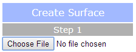
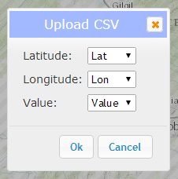
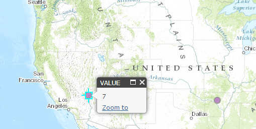
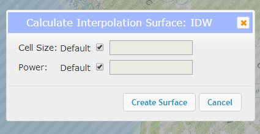
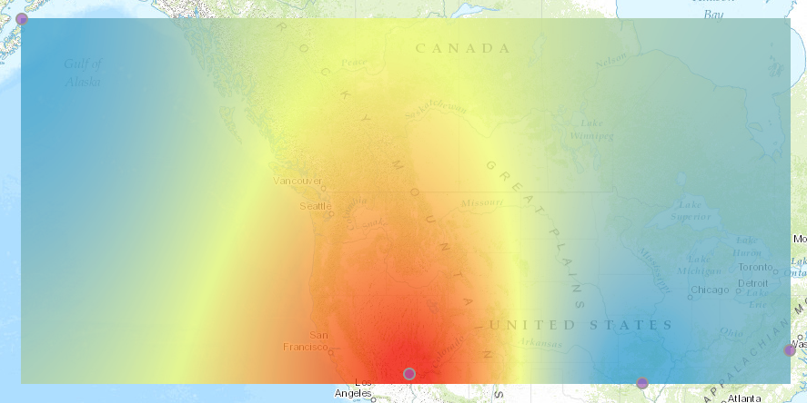
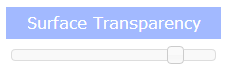
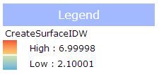

This application performs interpolation for a small set of data points to create a surface. For more information on interpolation and the different interpolation methods offered here, please click here.
Create Surface
Step 1
Click the "Choose File" button and navigate to a csv file that contains at the minimum a latitude or Y column, a longitude or X column, and a value column.
A popup will appear. Choose the column for the latitude, longitude, and value that you wish to map and click "Ok".
Your points should be mapped. To view the value for each point, click on it.
Step 2
Click either "Create Surface". A popup should appear where you can optionally choose additional parameters. Click "Create Surface".
Results
A surface layer should be added to your map. You can download this layer as a TIF raster by clicking the "Download Raster Data" button. This data is intended to be used in ArcMap or other GIS platforms. You can also clear the map to begin with a new dataset by clicking the "Clear" button or clear only your uploaded points by clicking the "Clear Points" button.
Surface Transparency
Adjust the transparency of your surface result by dragging this slider.
Legend
The legend will automatically populate when you create a surface.
Basemap picker
Click the basemap button to toggle between the topographic basemap and a satellite imagery basemap.